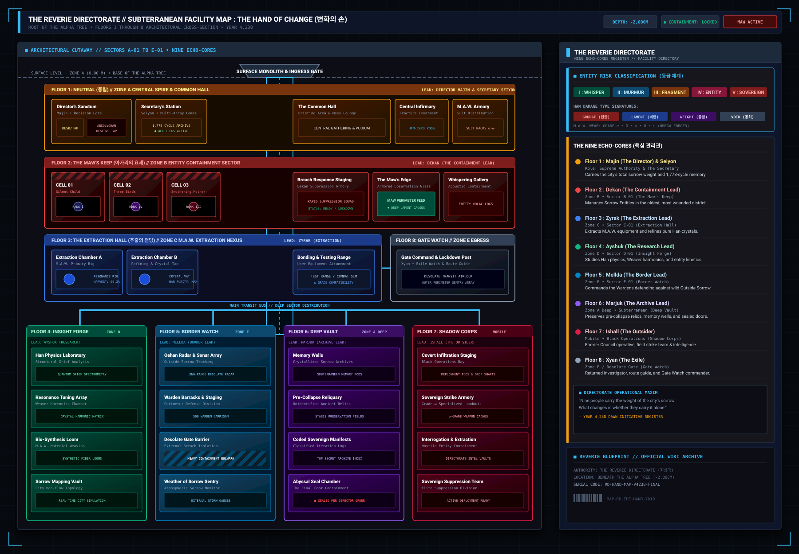

{kind=link}

Facility 01 "The Hand of Change" descends 800 meters into the subterranean crust below Zone A. It houses eight specialized containment and processing floors connected via the central Adamantine elevator column.
FLOOR 1: NEUTRAL COMMAND
Gold palm · Majin signs · Seiyon station · no quota
ENTER FLOOR 1 →FLOOR 2: MAW'S KEEP
Red keep · Dekan veto · Edge at the Maw · not a cell
ENTER FLOOR 2 →FLOOR 3: EXTRACTION HALL
Blue left wing · three frames · joined to F8
ENTER FLOOR 3 →FLOOR 4: INSIGHT FORGE
Hanging shaft · aperture, never an eye
ENTER FLOOR 4 →FLOOR 5: BORDER WATCH
Hanging shaft · slits · Zone E civic face
ENTER FLOOR 5 →FLOOR 6: DEEP VAULT
Hanging shaft · names · Cheongula seal · not Dekan
ENTER FLOOR 6 →FLOOR 7: SHADOW CORPS
Hanging shaft · unlisted · still a department
ENTER FLOOR 7 →FLOOR 8: GATE WATCH
Gray right wing · seven tablets · return count
ENTER FLOOR 8 →Geometry
Surface monolith. Floor 1 gold full-width. Floor 2 red full-width. Floor 3 blue left and Floor 8 gray right with a cyan join. Transit. Four equal hanging shafts Floors 4–7. That is THE_HAND_DR_LAYOUT: palm, keep, a joined pair of wings, four hanging shafts. Open a floor article for the department.
Cuts: 1 upper command (Floors 1–2 plates). 2 wings (Floors 3 and 8). 3 hanging pair Floors 5–6 (wall and vault). 4 hanging Floor 7 and the gate wing. Floor 4 is a hanging shaft, not paired with Floor 3.
How to read this map
The Hand of Change is Facility 01’s eight floors, not a second city. Floor 1 Neutral Command (Majin), 2 M.A.W.’s Keep, 3 Extraction Hall, 4 Insight Forge, 5 Border Watch (Mellda — Wilderness Tide telemetry), 6 Deep Vault, 7 Shadow Corps, 8 Gate Watch. Core Suppression is one floor’s Echo-Core. Facility Meltdown is all eight. Ordeals (five colors × four watches) can land on any floor and are not a ninth department.
Daily Recordings and Absolvohan stay on the Cycle. Gate Watch is the Exile’s Gate. Open each floor article for the department.